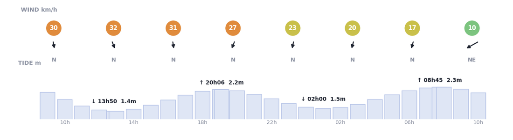
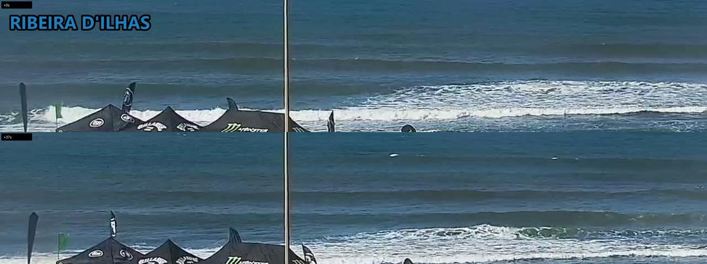
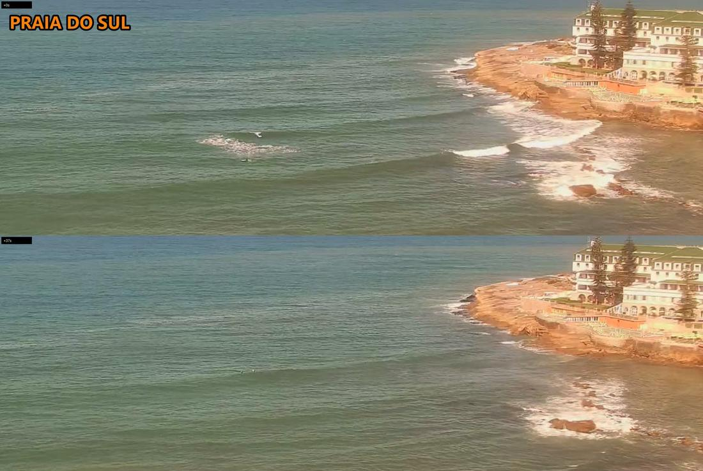
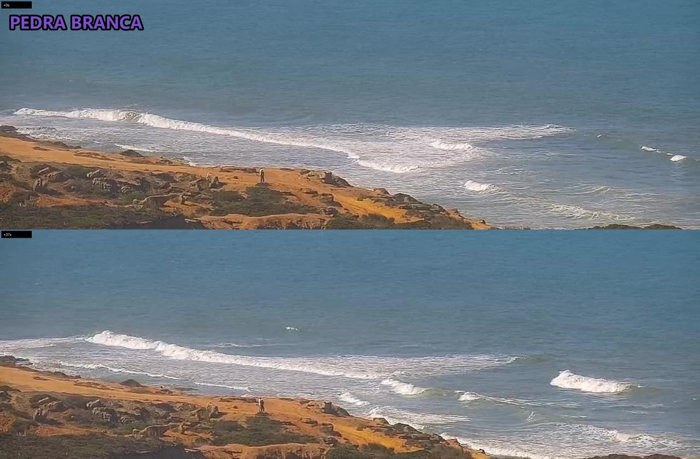
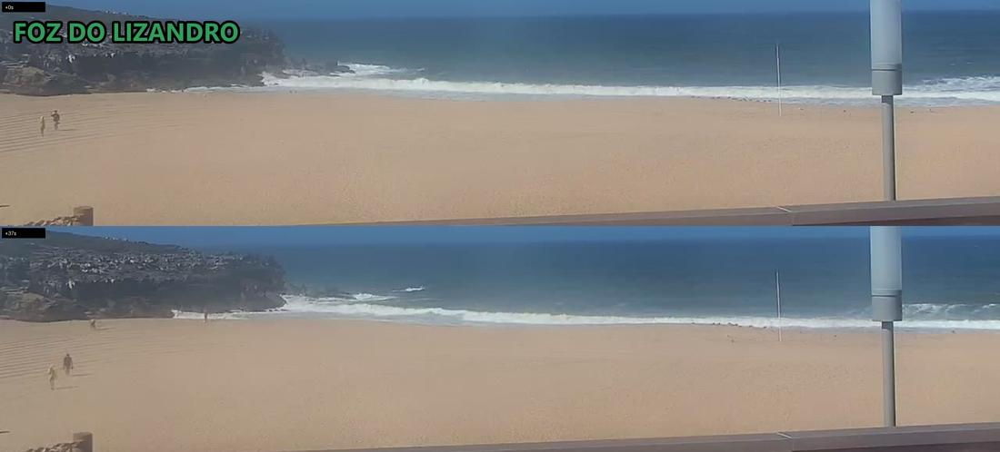

Ribeira
FAIR0.9–1.2 m★★★★☆
2 surfers
stacked lines along the point, offshore-groomed, contest tents up; ~2 clear on MEO, more specks unconfirmed
Fri 18 Sep · 11:08 · lunch
0.9–1.2 m★★★★☆
2 surfers
stacked lines along the point, offshore-groomed, contest tents up; ~2 clear on MEO, more specks unconfirmed
0.9–1.4 m★☆☆☆☆
🚫 cam down
no frames this run, cam down; forecast only, cross-shore 32 km/h N
0.9–1.4 m★★☆☆☆
2 surfers
small, soft lines off the reef, one wave ridden; 2 out
0.9–1.4 m★☆☆☆☆
0 surfers
crumbly, sectioning whitewater over the shelf, wind-chopped; nobody out
0.9–1.4 m★☆☆☆☆
0 surfers
dumping shorebreak, spray off the rocks, sand blowing; nobody out (approx, wide cam)
Sat 17:00–18:30 Tomorrow
★★★★☆ Ribeira
1.2-1.5m · 11km/h N · low-mid tide
📅 Block 90minForecast only: stars from the model, wind and tide. Nobody has looked at a camera yet.





| When | Ribeira | Norte | Sul | Pedra | Lizandro |
|---|---|---|---|---|---|
| 2026-09-18 11:08lunch | FAIR2 | VERY-POOR— | VERY-POOR2 | VERY-POOR0 | VERY-POOR0 |
| 2026-09-17 19:03sunset | — | VERY-POOR— | VERY-POOR0 | VERY-POOR0 | VERY-POOR— |
| 2026-09-17 18:39sunset | FAIR— | VERY-POOR— | VERY-POOR0 | VERY-POOR0 | VERY-POOR— |
| 2026-09-17 15:39afternoon | FAIR— | — | VERY-POOR8 | VERY-POOR0 | VERY-POOR0 |
| 2026-09-17 11:39lunch | FAIR3 | VERY-POOR— | VERY-POOR18 | VERY-POOR0 | VERY-POOR0 |
| 2026-09-17 10:47lunch | FAIR2 | VERY-POOR— | VERY-POOR8 | VERY-POOR0 | VERY-POOR0 |
| 2026-09-16 18:39sunset | FAIR— | VERY-POOR— | VERY-POOR0 | VERY-POOR0 | VERY-POOR— |
| 2026-09-16 15:39afternoon | FAIR3 | VERY-POOR— | VERY-POOR0 | VERY-POOR0 | VERY-POOR0 |